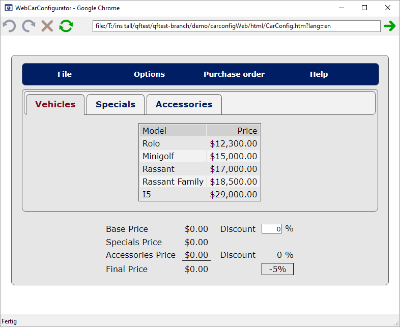

| Version 6.0.3 |
As this approach is quite difficult to understand just via reading,
we describe a sample implementation using the WebCarConfigurator in this
section. You can find the WebCarConfigurator test-suite at
qftest-6.0.3/demo/carconfigWeb/carconfigWeb_en.qft.
|
|  | ||
|
| Figure 47.6: WebCarConfigurator | ||
As stated in the previous section we need to figure out which attribute provides the required information. This information will then be used to point to a generic class of QF-Test.
As shown in the previous sections our first task for testing web-projects is to figure out how QF-Test recognizes the components and to create a corresponding dictionary. This task looks rather difficult at the first glance, but its result will drastically reduce the maintenance work due to component changes or hierarchy changes in later stages of your project. This is because QF-Test uses the relevant properties of your HTML components only, and not any information available.
chapter 57 shows a full list of all generic classes for standard components and complex components like lists or trees. We recommend that you map only those components which are really required and not every existing component. It's rather simple to extend the mechanism later.
Repeating the steps of the previous example
we would now continue to map other components like menu items or tabs.
As the mapping would be too much for this manual we provided a full sample
in the demo test-suite
qftest-6.0.3/demo/carconfigWeb/carconfigWeb_en.qft
in the procedure startStop.start in the last sequence,
Install CustomWebResolver.
In order to use the created dictionary at every start of your web application you should
move the procedure call to qfs.web.ajax.installCustomWebResolver into
your Setup node directly after launching the browser.
In case you created the Setup node via the Quickstart Wizard of QF-Test you will find
a template call of the procedure in the sequence
Install CustomWebResolver. That call can be parametrized accordingly.
Besides the pure translation of web-page specifics into QF-Test classes, it's also
possible to ignore certain components during recording.
This is done via the parameters ignoreTags and ignoreByAttributes.
However, you should do it only after you mapped most of the business components.
Finally, we would like to show the differences in the recording of the component tree as it was originally and after implementing the custom web resolver as in the demo test-case of the demo test-suite. The figure below shows the recording without any resolvers on the left and the simplified tree on the left.
|
|
|
||||||
|
| Figure 47.16: Simplification of WebCarConfigurator demo | ||||||
| Last update: 9/6/2022 Copyright © 1999-2022 Quality First Software GmbH |